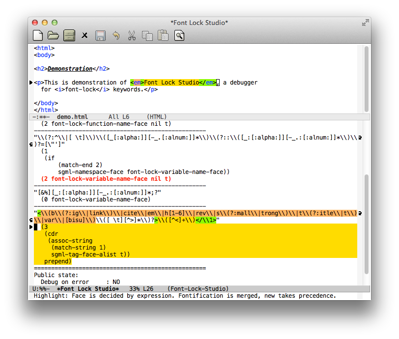

Syntax Highlighting using font-lock in Emacs
| = Anders Lindgren -- Lindydancer = |
Make the world a more colorful place!
Before:
int main(void)
{
printf("Hello World\n");
}
After:
int main(void)
{
printf("Hello World\n");
}
Anders Lindgren -- Lindydancer
Compiler developer at IAR Systems in Uppsala
IAR Systems make development tools for the embedded industry. I've
been with the company since 1997 -- 18 years!
Emacs user since (at least) 1991
Author of the following built-in Emacs packages:
- follow-mode
- (global-)auto-revert-mode
- cwarn-mode
Involved with the OS X port of Emacs
- ns-auto-hide-menu-bar
Author or co-author of
- Multicolumn
- el2markdown
- ini-mode
- Erlang-mode (with Robert Virding et.al.)
- REXX-mode
- Folding-mode (with Jamie Lokier and Jari Aalto)
Known as Lindydancer on:
- GitHub
- Stack Overflow / Emacs Stack Excange
Syntax Highlighting
Or "font-lock", as it's called in the Emacs world
Why do I want to learn more about it?
- Fix problems
- Tweek your environment
- Write packages providing additional highlighting
- Write your own major mode
Font-lock Phases
Syntactic phase (comment and strings)
In most cases, a properly defined "syntax-table" takes care of this
for you.
Keyword phase
A "keyword list" is a list of rules, provided by the major mode, or by
additional packages, describing what should be highlighted and how.
Font-lock keywords
Simplest form:
(MATCHER HIGHLIGHT)
For example:
("alpha" font-lock-constant-face)
Ok, ok, this is not a good example, as it will match "alpha" in any
context.
Regexp MATCHER
Fortunately, MATCHER is a "regular expression" (regexp). It provides
some special features. For example, the following will match "alpha"
but only when on it's own:
("\\_<alpha\\_>" font-lock-constant-face)
Font-lock keywords
Groups
You can use "\\(" and "\\)" to group things, only to match part of
something bigger. Here HIGHLIGHT is not simply the face to use, it
also specifies it should only highlight group 1 (i.e. "alpha" but not
"beta").
("\\_<\\(alpha\\)beta\\_>" (1 font-lock-constant-face))
Font-lock keywords
Multiple HIGHLIGHT:s
("\\_<\\(alpha\\)\\(beta\\)\\_>"
(1 font-lock-constant-face)
(2 font-lock-builtin-face))
Font-lock keywords
Anchored search
An "anchored search" is a search within a search.
("\\_<alpha\\_>"
(1 font-lock-constant-face)
("\\_<beta\\_>"
nil nil (2 font-lock-builtin-face)))
This highlights any number of "beta":s found after an "alpha".
You can use the pre- and post-match forms to move the point around
before or after the sub-searches. The pre-match form also controls the
extent of the search -- it is possible to make the search span
multiple lines.
Font-lock keywords
Flags
A HIGHLIGHT has two optional flag fields:
(SUBEXP FACE OVERRIDE LAXMATCH)
OVERRIDE
OVERRIDE controls what happens when there already was a face at the
location. If not present, the match is not applied. In most cases this
is the desired effect, as we don't want to mess up comments or
strings. Legal values are "t", "keep", "append", and "prepend".
Hint: Prefer "prepend" over "t", as it behaves better when the new and
existing face provides different attributes, for example when the
existing face specifies a background color and the new doesn't.
LAXMATCH
Don't signal an error if there is no match for SUBEXP.
The power of code (over constants)
Arbitrary expressions
MATCHER and FACE doesn't have to be constants. In fact, they can be
arbitrary code, which makes font-lock packages really powerful.
Unfortunately, this talk it to short to dig into this in detail...
Adding font-lock keywords to an existing mode
font-lock-add-keywords
You can use font-lock-add-keywords in two different ways
Add to current buffer
This is the way I prefere to use it. The main difference is that if I
make an error, I can simply kill the buffer, fix the error and reload
the file.
(defun my-c-mode-common-hook ()
(font-lock-add-keywords
nil
'))
(add-hook ' ')
Add to a specific major mode
(font-lock-add-keywords '
')
Providing font-lock keywords to a major mode
(defvar my-font-lock-keywords
'
"Highlight rules for `my-mode'.")
(define-derived-mode my-mode prog-mode "My"
"My own mode"
(setq font-lock-defaults '))
Debugging font-lock keywords
Font-lock is not developer friendly:
- Errors are silently ignored
- A badly written rule could hang Emacs
font-lock-studio
Font-lock Studio is an interactive debugger for font-lock keywords.
Overview:
- Two-window setup -- Source and list of font-lock keywords
- Single step keyowords, match by match
- Visualizes matches using a palette of background colors
- Invoke the debugger if an error occurs
- Integrated with edebug (i.e. step into lisp code)
- Explain rules in "plain english"
- Set breakpoints, run, etc.
- Great for reverse engineering existing packages.

Regression tests
Faceup -- Markup language for texts with faces
The package "faceup" makes it possible to save a text representation
of a syntax highlighted buffer.
Together with "ert" (the Emacs Regression Test package), it's possible
to verify that a package highlights a buffer exactly like it did when
the reference file was first generated.
For example:
«t:int» «f:main»(«t:void»)
{
printf(«s:"Hello World\n"»);
}
Font-lock examples
The following slides contains a number of examples of font-lock
packages demonstrating some of the things that are possible to do in
font-lock.
cwarn-mode
In C, highlight assignments in expressions and stray semicolons.
For example:
int test()
{
if (x = 17);
return 1;
return 2;
}
cmake-font-lock
CMake is a build system generator that can generate Makefiles,
ninjafiles, Visual Studio projects etc. Unfortunately, the CMake
language is really hard to read, since it does not have normal return
values. (To make a long story short), a word passed to a function can
be a keyword, the name of a variable, a string, a property, a
target...
cmake-font-lock knows about the signature of all CMake functions, and
can highlight them accordingly:
function(my_get_dirs var)
set(dirs "")
foreach(file ${ARGN})
get_filename_component(abs_file ${file} ABSOLUTE)
get_filename_component(abs_path ${abs_file} PATH)
list(FIND dirs ${abs_path} present)
if(${present} EQUAL -1)
list(APPEND dirs ${abs_path})
endif()
endforeach()
set(${var} ${dirs} PARENT_SCOPE)
endfunction()
my_get_dirs(DIRS alpha/one.h alpha/two.h beta/three.h)
message(STATUS "Directories:")
foreach(d ${DIRS})
message(STATUS " ${d}")
endforeach()
preproc-font-lock
Make preprocessor macro definitions stand out. I find this especially
useful for multiline macros.
#incude <stdio.h>
#define HORSE 1
#define MAX(x, y) \
( (x) > (y) \
? (x) \
: (y))
A nice side effect is that helps you find broken macros:
#define MIN(x, y) \
( (x) < (y)
? (x) \
: (y))
obj-font-lock
Objective-C function calls are really hard to spot, not so any more:
void test()
{
[NSColor colorWithCalibratedRed: first + 0.01
green: fourth + (second/third)
blue: (CGFloat)[my_string length]
alpha: fourth];
}
lisp-extra-font-lock
Highlights bound variables: parameters, "let" etc.
Highlights special (global) variables in a different face.
Highlights quoted expressions.
Backquotes, and the related "," and ",@" operators, are highlighted in
a special face.
(defun my-function (next) (let ((numbers ') ( t)) numbersnext))
World premiere for --
World premiere for -- e2ansi
Syntax highlighting in `less', powered by Emacs.
Renders a syntax highlighted Emacs buffer using ANSI sequences.
Command line tool "e2ansi-cat"
Use an Emacs in batch mode to perform the convertion.
"less" and input filters
You can configure "less" to use "e2ansi-cat" to render all viewed
files:
export "LESSOPEN=||-emacs --batch -Q -l ~/.emacs -l e2ansi-silent -l bin/e2ansi-cat %s"
export "LESS=-r -j20"
alias "more=less -X -E"
The end!
All packages (except font-lock itself) presented here were written by
me and released under the GNU General Public License.
Contact information
email: andlind@gmail.com
GitHub: https://github.com/Lindydancer
EmacsWiki: http://www.emacswiki.org/emacs/AndersLindgren
Most of the packages can be installed from "melpa.org".
Information about this presentation
This presentation was written using "org-mode" and was presented using
"org-present".
The option "org-src-fontify-natively" should be set to "t".
All packages presented in this presentation should be installed in
order for the examples to be correctly highlighted.